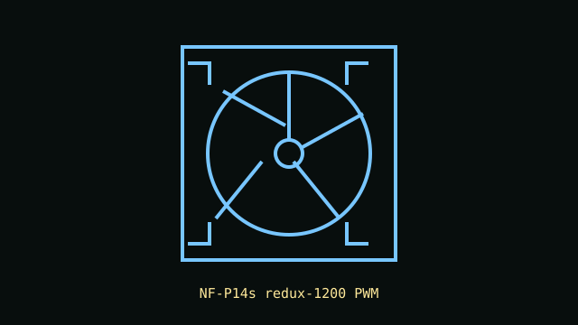

[ IDENTIFIED SKU // NF-P14s redux-1200 PWM ]
Noctua NF-P14s redux-1200 PWM
140 mm square-frame redux fan in the 1200 RPM PWM configuration; distinct from the 1500 RPM model.

Recorded specifications
| Exact part | NF-P14s redux-1200 PWM |
|---|---|
| Frame / thickness | 140 × 140 × 25 mm |
| Speed / airflow / pressure / noise | 1200 RPM maximum; 110.3 m³/h maximum airflow; 1.29 mm H₂O maximum static pressure; 19.6 dB(A). |
| Bearing | SSO bearing |
| Electrical / control | 12 V DC; 0.08 A maximum input current; 4-pin PWM fan connector. |
| Case / radiator compatibility | Standard 140 mm fan mounting pattern, 25 mm depth. Suitable for case airflow and compatible radiator positions; verify the case/radiator hole spacing, clearance, screw length and header current budget. |
Installation notes
Use a 4-pin PWM header or controller. 140 mm frame openings have model-specific hole spacing; confirm the destination's dimensions rather than relying only on nominal fan size.
Manufacturer sources
- Noctua product page — NF-P14s redux-1200 PWMExact speed variant, performance and mechanical/electrical specifications.
- Noctua technical data sheet — NF-P14s redux-1200 PWMManufacturer product data sheet for the 1200 RPM PWM version.